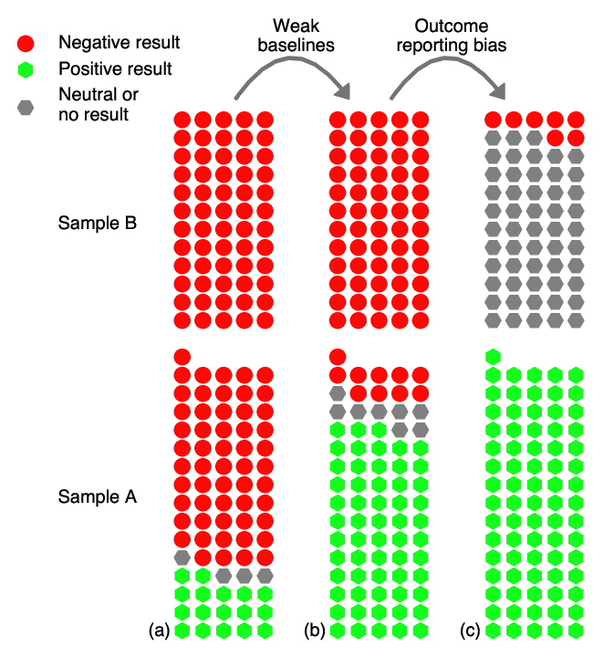

弱基线与报告偏差：机器学习 PDE 加速有多可信？
Weak baselines and reporting biases lead to overoptimism in machine learning for fluid-related partial differential equations
据 arXiv:2407.07218v1 全文整理，期刊出版信息。本页是中文分析，不是全文翻译；未独立重跑复现实验。原文检索截止日期为 2023-04-01，不是实时领域排名。
1. 这篇文章研究什么，而不研究什么
这不是新的神经 PDE 求解器，而是一项关于研究评价方式的系统综述与复现实验。McGreivy 与 Hakim 问的是：当机器学习声称比传统数值法更快时，比较对象是否足够强、精度是否一致、负面结果是否被同样报告？其主要论点不是“机器学习无用”，而是弱基线与选择性报告会系统性抬高对进展的判断。
系统检索截至 2023 年 4 月 1 日，范围是流体相关 PDE 的向前求解效率。逆问题、RANS/LES、某些高维 PDE 和仅预测宏观量的代理不在这一系统综述范围；PINN 也不计入这 82 篇，而在另一个报告偏差分析中单独使用。因此不能把结论直接外推到全部科学机器学习，更不能把它当作 2026 年所有方法的排名。（原文 §2、§6.1）
2. 公平比较的两条最低要求
- 同精度比较时间，或同时间比较精度。先规定误差度量、测试分布和预测时长，再让每种方法自行选择足够的网格与求解容差。相同网格不等于相同误差。
- 选适合问题的高效数值算法。光滑周期问题应考虑谱方法；椭圆问题应考虑成熟线性求解器、预条件及可复用分解。复杂几何、间断或不同规模可能改变最佳选择，不能一概指定某一种算法。
生成训练标签的高精度求解器往往远比 ML 预测精确。如果直接拿它的运行时间作分母，就把“不必要的过度求解”计成了 ML 加速。应画出误差–时间曲线，而非只报一个未经精度匹配的倍率。这两条是必要条件，不保证实验的全部设计已经公平。（原文 §2）
3. 三个样本，三个不能混淆的分母
| 分析 | 样本与结果 | 正确解释 |
|---|---|---|
| 系统综述 | 82 篇符合条件；76 篇称优于基线，4 篇较差，2 篇混合或相当。 | 是限定任务与检索日期的文献集合，不是全部 ML 论文。 |
| 弱基线审查 | 上述 76 篇正面论文中，60 篇违反至少一条规则，2 篇有警告，14 篇通过。 | 60/76≈79%，不是 79% 的方法已被证明没有价值。 |
| 摘要报告倾向 | 另一引用抽样中，232 篇符合条件的摘要：220 篇仅报告正面、12 篇同时报告正负面、0 篇仅负面。 | 94.8% 仅正面，显示报告分布高度不对称；本身不是对每项真实效果的重新测量。 |
作者又比较了两组论文：A 组为 76 篇正面性能论文，B 组为 60 篇 PINN 论文。摘要提及效率比较的比例分别为 61/76（约 80%）与 5/60（约 8%）；B 组全文提及效率的只有 7/60（约 12%）。这支持选择性报告的解释，但不是随机对照的因果证明，也不能推定某位作者有不当动机。B 组效果较差的预期来自既有 PINN 性能认识，而非逐篇重跑后确认。（原文 §3、§6.2–6.3）

读图时要区分直接统计与反事实估计：图中的部分情景是在假设更强基线或更充分报告后，对性能分布作的估计，不是作者已重新测得整个领域的“校正后真实成绩”。（原文图 1）
4. 更强的基线会怎样改变结论
作者针对十个案例进行复现与基线重建，主要是高引用、规则区域上的一维或二维问题。这不是随机抽样：9/10 案例中改进基线比原基线至少快 100 倍，7/10 中它比 ML 方法更快。这组数字说明问题可以很严重，但不能直接估计全领域失败比例。（原文 §2、表 2）
| 案例 | 原先报告 | 换用更强基线后的比较 |
|---|---|---|
| FNO，二维 Navier–Stokes | 约 1000 倍加速 | 约 7 倍加速，仍有收益；新基线为二次多项式 DG（p=2）。该比较使用 ML 的 GPU 与数值法的笔记本 CPU，不是同硬件的普适倍率。 |
| DeepONet，一维平流 | 约 24 倍加速 | 相对二次多项式 DG（p=2） 约慢 10 倍。 |
| Kochkov 等，二维 Navier–Stokes | 约 80 倍加速 | 相对伪谱基线略慢；针对该问题的比较，不能外推到所有几何与湍流设置。 |
| Bar-Sinai 等，Burgers 方程 | 自由度减少约 4–8 倍 | 相对改进比较减少约 2–4 倍；这是自由度收益，不是运行时间加速。 |
表中仅精选四例，未把自由度、推理时间和完整训练成本混为一种指标。原文还讨论了 Poisson 问题中复用 LU 分解的效益；这不意味着 LU 在任意问题规模下都优于多重网格。每项倍率都依赖方程、边界条件、精度、实现和硬件。（原文表 2 及案例附录）
5. 推理快，不等于总成本已回本
设生成数据与训练的合计成本为 C，强数值基线每次求解成本为 tB，ML 每次成本为 tML，推理加速比为 s=tB/tML。原文式（1）比较离线成本与重复调用后的成本；重排得到：
这里的重排是本报告的教学说明。若 s≤1，在这个固定成本模型下仅靠增加调用次数不会回本；即使 s 很大，也需要足够多的重复任务来摊销 C。对实际应用还应计入预处理、数据搬运、编译和修正求解，并说明哪些成本可以复用。（原文式 1；后半为阅读延伸）
示例而非论文实测：离线成本 100 小时，基线每次 1 秒，ML 每次 0.01 秒，则回本约需 363,637 次调用。若比较只针对在线实时延迟，离线成本仍应透明报告，但不应与在线延迟混成一个指标。
6. 文章的结论边界
- 文献分类包含人工判断；规则简单明确，但算法是否“足够高效”仍取决于问题背景。
- 十个复现案例有选择性，集中在较易采用成熟方法的规则问题；复杂几何与新型应用需另做比较。
- 检索范围、引用抽样与发表选择都会影响样本；报告偏差证据不是对所有未发表结果的观测。
- 作者没有证明 ML 不可能获益。FNO 案例更强基线后仍有加速，就说明应把“收益缩水”与“完全无收益”分开。
- 结论针对所审查的版本与实验。不能据此宣判未被纳入的新方法无效。
可取的态度不是“只信传统算法”，而是让新方法面对真正有竞争力的对手，同时允许负面结果进入文献。作者建议更好的基线、透明报告，以及预注册、注册报告和负面结果发表等机制。（原文 Discussion）
7. 用于自己的研究：一张验收清单
以下是阅读延伸，不是论文已经研究过 VMEC、CoilStellaration 或 GX 的结论。
- VMEC-Cheb：共同检查力残差及关键磁场、剖面量的精度，比较误差–墙钟曲线；将同精度提速与降低容差后的提速分开。保留冷启动、编译与热运行数据。
- 线圈生成与教师修正：以相同 strict feasibility 要求和独立边界测试集比较，包含预测、修正和失败重试的端到端成本。一次前向推理任务与允许优化迭代的任务应分榜。
- GX 代理：区分热流预测、完整 PDE 演化与外层设计优化。本文系统综述排除了只预测宏观量的代理，不能直接据此否定 AI–GX；仍可借用其同任务、同质量、全成本的评测原则。
- 固定误差度量、预测时长和测试分布；报告完整案例矩阵及失败案例。
- 调优基线的算法、网格、时间步与迭代容差，而不只调优神经网络。
- 说明硬件、批量、预热、JIT、精度类型与并行度，给出硬件比较的理由。
- 分别报告数据、训练、调参、在线预测和后处理成本；发布代码、随机种子及误差–时间曲线。
- 补充强传统基线和强 ML 基线；在分布外条件下单独评价。
8. 自测：你是否已经读懂这篇文章
79% 的正确分母是什么？
76 篇宣称优于基线的合格论文中，有 60 篇违反至少一条基线规则，不是全部 ML 论文的 79%。
两种方法使用相同网格，为什么仍可能不公平？
算法的误差阶数、表示能力和稳定性不同。相同网格可能让传统求解器远比 ML 精确，应比较共同误差门槛下的成本。
十个案例中七个被强基线超过，能否说七成 ML PDE 方法无效？
不能。案例有针对性且任务范围窄；它们展示问题的存在及严重性，不构成领域总体的随机效果估计。
一个热流代理能否直接被本文结论否定？
不能。宏观量代理不在该系统综述范围；需按其实际任务建立精度、成本与泛化比较。